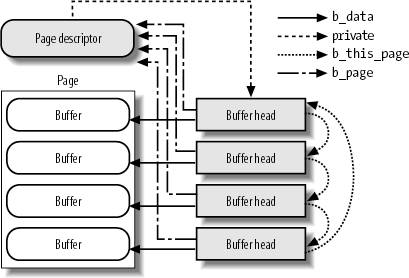

{% include JB/setup %}
{% raw %}
<div>


<a name="understandlk-CHP-15-SECT-2"></a>
<h3 class="docSection1Title">15.2. Storing Blocks in the Page Cache</h3><a name="IDX-CHP-15-3794"></a>
<a name="IDX-CHP-15-3795"></a>
<a name="IDX-CHP-15-3796"></a>
<p class="docText1">We have seen in the section "<a class="pcalibre5 docLink pcalibre1" href="understandlk-CHP-14-SECT-1.html#understandlk-CHP-14-SECT-1">Block Devices Handling</a>" in <a class="pcalibre5 docLink pcalibre1" href="understandlk-CHP-14.html#understandlk-CHP-14">Chapter 14</a> that the VFS, the mapping layer, and the various filesystems group the disk data in logical units called "blocks."</p>
<p class="docText1">In old versions of the Linux kernel, there were two different main disk caches: the page cache, which stored whole pages of disk data resulting from accesses to the contents of the disk files, and the <span class="docEmphasis">buffer cache</span><a name="IDX-CHP-15-3797"></a> 
, which was used to keep in memory the contents of the blocks accessed by the VFS to manage the disk-based filesystems.</p>
<p class="docText1">Starting from stable version 2.4.10, the buffer cache does not really exist anymore. In fact, for reasons of efficiency, block buffers are no longer allocated individually; instead, they are stored in dedicated pages called "buffer pages<a name="IDX-CHP-15-3798"></a> 
," which are kept in the page cache.</p>
<p class="docText1">Formally, a <span class="docEmphasis">buffer page</span> is a page of data associated with additional descriptors called "buffer heads<a name="IDX-CHP-15-3799"></a> 
," whose main purpose is to quickly locate the disk address of each individual block in the page. In fact, the chunks of data stored in a page belonging to the page cache are not necessarily adjacent on disk.</p>
<a name="understandlk-CHP-15-SECT-2.1"></a>
<h4 class="docSection2Title">15.2.1. Block Buffers and Buffer Heads</h4><a name="IDX-CHP-15-3800"></a>
<a name="IDX-CHP-15-3801"></a>
<p class="docText1">Each block buffer has a <span class="docEmphasis">buffer head</span> descriptor of type <tt class="calibre25">buffer_head</tt>. This descriptor contains all the information needed by the kernel to know how to handle the block; thus, before operating on each block, the kernel checks its buffer head. The fields of a buffer head are listed in <a class="pcalibre5 docLink pcalibre1" href="#understandlk-CHP-15-TABLE-4">Table 15-4</a>.</p>
<a name="understandlk-CHP-15-TABLE-4"></a><p class="calibre14"><table cellspacing="0" frame="hsides" rules="all" cellpadding="4" width="100%" class="calibre15"><caption class="calibre33"><h5 class="docFigureTitle">Table 15-4. The fields of a buffer head</h5></caption><colgroup class="calibre16"><col class="calibre17"/><col class="calibre17"/><col class="calibre17"/></colgroup><thead class="calibre18"><tr class="calibre34"><th class="thead" scope="col"><p class="docText1"><span class="calibre5">Type</span></p></th><th class="thead" scope="col"><p class="docText1"><span class="calibre5">Field</span></p></th><th class="thead" scope="col"><p class="docText1"><span class="calibre5">Description</span></p></th></tr></thead><tr class="calibre2"><td class="docTableCell"><p class="docText2"><tt class="calibre25">unsigned long</tt></p></td><td class="docTableCell"><p class="docText2"><tt class="calibre25">b_state</tt></p></td><td class="docTableCell"><p class="docText2">Buffer status flags</p></td></tr><tr class="calibre2"><td class="docTableCell"><p class="docText2"><tt class="calibre25">struct buffer_head *</tt></p></td><td class="docTableCell" valign="top"><p class="docText2"><tt class="calibre25">b_this_page</tt></p></td><td class="docTableCell" valign="top"><p class="docText2">Pointer to the next element in the buffer page's list</p></td></tr><tr class="calibre2"><td class="docTableCell"><p class="docText2"><tt class="calibre25">struct page *</tt></p></td><td class="docTableCell"><p class="docText2"><tt class="calibre25">b_page</tt></p></td><td class="docTableCell"><p class="docText2">Pointer to the descriptor of the buffer page holding this block</p></td></tr><tr class="calibre2"><td class="docTableCell"><p class="docText2"><tt class="calibre25">atomic_t</tt></p></td><td class="docTableCell"><p class="docText2"><tt class="calibre25">b_count</tt></p></td><td class="docTableCell"><p class="docText2">Block usage counter</p></td></tr><tr class="calibre2"><td class="docTableCell"><p class="docText2"><tt class="calibre25">u32</tt></p></td><td class="docTableCell"><p class="docText2"><tt class="calibre25">b_size</tt></p></td><td class="docTableCell"><p class="docText2">Block size</p></td></tr><tr class="calibre2"><td class="docTableCell"><p class="docText2"><tt class="calibre25">sector_t</tt></p></td><td class="docTableCell"><p class="docText2"><tt class="calibre25">b_blocknr</tt></p></td><td class="docTableCell"><p class="docText2">Block number relative to the block device (logical block number)</p></td></tr><tr class="calibre2"><td class="docTableCell"><p class="docText2"><tt class="calibre25">char *</tt></p></td><td class="docTableCell"><p class="docText2"><tt class="calibre25">b_data</tt></p></td><td class="docTableCell"><p class="docText2">Position of the block inside the buffer page</p></td></tr><tr class="calibre2"><td class="docTableCell"><p class="docText2"><tt class="calibre25">struct block_device *</tt></p></td><td class="docTableCell" valign="top"><p class="docText2"><tt class="calibre25">b_bdev</tt></p></td><td class="docTableCell" valign="top"><p class="docText2">Pointer to block device descriptor</p></td></tr><tr class="calibre2"><td class="docTableCell"><p class="docText2"><tt class="calibre25">bh_end_io_t *</tt></p></td><td class="docTableCell"><p class="docText2"><tt class="calibre25">b_end_io</tt></p></td><td class="docTableCell"><p class="docText2">I/O completion method</p></td></tr><tr class="calibre2"><td class="docTableCell"><p class="docText2"><tt class="calibre25">void *</tt></p></td><td class="docTableCell"><p class="docText2"><tt class="calibre25">b_private</tt></p></td><td class="docTableCell"><p class="docText2">Pointer to data for the I/O completion method</p></td></tr><tr class="calibre2"><td class="docTableCell" valign="top"><p class="docText2"><tt class="calibre25">struct list_head</tt></p></td><td class="docTableCell" valign="top"><p class="docText2"><tt class="calibre25">b_assoc_buffers</tt></p></td><td class="docTableCell"><p class="docText2">Pointers for the list of indirect blocks associated with an inode (see the section "<a class="pcalibre5 docLink pcalibre1" href="understandlk-CHP-15-SECT-1.html#understandlk-CHP-15-SECT-1.1">The address_space Object</a>" earlier in this chapter)</p></td></tr></table></p><br class="calibre7"/>
<p class="docText1">Two fields of the buffer head encode the disk address of the block: the <tt class="calibre25">b_bdev</tt> field identifies the block deviceusually, a disk or a partitionthat contains the block (see the section "<a class="pcalibre5 docLink pcalibre1" href="understandlk-CHP-14-SECT-4.html#understandlk-CHP-14-SECT-4.1">Block Devices</a>" in <a class="pcalibre5 docLink pcalibre1" href="understandlk-CHP-14.html#understandlk-CHP-14">Chapter 14</a>), while the <tt class="calibre25">b_blocknr</tt> field stores the <span class="docEmphasis">logical block number</span>, that is, the index of the block inside its disk or partition.</p>
<p class="docText1">The <tt class="calibre25">b_data</tt> field specifies the position of the block buffer inside the buffer page. Actually, the encoding of this position depends on whether the page is in high memory or not. If the page is in high memory, the <tt class="calibre25">b_data</tt> field contains the offset of the block buffer with respect to the beginning of the page; otherwise, <tt class="calibre25">b_data</tt> contains the linear address of the block buffer.</p>
<p class="docText1">The <tt class="calibre25">b_state</tt> field may store several flags. Some of them are of general use and are listed in <a class="pcalibre5 docLink pcalibre1" href="#understandlk-CHP-15-TABLE-5">Table 15-5</a>. Each filesystem may also define its own private buffer head flags.</p>
<a name="understandlk-CHP-15-TABLE-5"></a><p class="calibre14"><table cellspacing="0" frame="hsides" rules="all" cellpadding="4" width="100%" class="calibre15"><caption class="calibre33"><h5 class="docFigureTitle">Table 15-5. The buffer head's general flags</h5></caption><colgroup class="calibre16"><col class="calibre17"/><col class="calibre17"/></colgroup><thead class="calibre18"><tr class="calibre34"><th class="thead" scope="col"><p class="docText1"><span class="calibre5">Flag</span></p></th><th class="thead" scope="col"><p class="docText1"><span class="calibre5">Description</span></p></th></tr></thead><tr class="calibre2"><td class="docTableCell"><p class="docText2"><tt class="calibre25">BH_Uptodate</tt></p></td><td class="docTableCell"><p class="docText2">Set if the buffer contains valid data</p></td></tr><tr class="calibre2"><td class="docTableCell"><p class="docText2"><tt class="calibre25">BH_Dirty</tt></p></td><td class="docTableCell"><p class="docText2">Set if the buffer is dirtythat is, it contains data that must be written to the block device</p></td></tr><tr class="calibre2"><td class="docTableCell"><p class="docText2"><tt class="calibre25">BH_Lock</tt></p></td><td class="docTableCell"><p class="docText2">Set if the buffer is locked, which usually happens when the buffer is involved in a disk transfer</p></td></tr><tr class="calibre2"><td class="docTableCell"><p class="docText2"><tt class="calibre25">BH_Req</tt></p></td><td class="docTableCell"><p class="docText2">Set if data transfer for initializing the buffer has already been requested</p></td></tr><tr class="calibre2"><td class="docTableCell"><p class="docText2"><tt class="calibre25">BH_Mapped</tt></p></td><td class="docTableCell"><p class="docText2">Set if the buffer is mapped to diskthat is, if the <tt class="calibre25">b_bdev</tt> and <tt class="calibre25">b_blocknr</tt> fields of the corresponding buffer head are significant</p></td></tr><tr class="calibre2"><td class="docTableCell"><p class="docText2"><tt class="calibre25">BH_New</tt></p></td><td class="docTableCell"><p class="docText2">Set if the corresponding block has just been allocated and has never been accessed</p></td></tr><tr class="calibre2"><td class="docTableCell"><p class="docText2"><tt class="calibre25">BH_Async_Read</tt></p></td><td class="docTableCell"><p class="docText2">Set if the buffer is being read asynchronously</p></td></tr><tr class="calibre2"><td class="docTableCell"><p class="docText2"><tt class="calibre25">BH_Async_Write</tt></p></td><td class="docTableCell"><p class="docText2">Set if the buffer is being written asynchronously</p></td></tr><tr class="calibre2"><td class="docTableCell"><p class="docText2"><tt class="calibre25">BH_Delay</tt></p></td><td class="docTableCell"><p class="docText2">Set if the buffer is not yet allocated on disk</p></td></tr><tr class="calibre2"><td class="docTableCell"><p class="docText2"><tt class="calibre25">BH_Boundary</tt></p></td><td class="docTableCell"><p class="docText2">Set if the block to be submitted after this one will not be adjacent to this one</p></td></tr><tr class="calibre2"><td class="docTableCell"><p class="docText2"><tt class="calibre25">BH_Write_EIO</tt></p></td><td class="docTableCell"><p class="docText2">Set if there was an I/O error when writing this block</p></td></tr><tr class="calibre2"><td class="docTableCell"><p class="docText2"><tt class="calibre25">BH_Ordered</tt></p></td><td class="docTableCell"><p class="docText2">Set if the block should be written strictly after the blocks submitted before it (used by journaling filesystems<a name="IDX-CHP-15-3802"></a> 
)</p></td></tr><tr class="calibre2"><td class="docTableCell"><p class="docText2"><tt class="calibre25">BH_Eopnotsupp</tt></p></td><td class="docTableCell"><p class="docText2">Set if the block device driver does not support the operation requested</p></td></tr></table></p><br class="calibre7"/>
<a name="understandlk-CHP-15-SECT-2.2"></a>
<h4 class="docSection2Title">15.2.2. Managing the Buffer Heads</h4><a name="IDX-CHP-15-3803"></a>
<a name="IDX-CHP-15-3804"></a>
<a name="IDX-CHP-15-3805"></a>
<a name="IDX-CHP-15-3806"></a>
<a name="IDX-CHP-15-3807"></a>
<a name="IDX-CHP-15-3808"></a>
<a name="IDX-CHP-15-3809"></a>
<a name="IDX-CHP-15-3810"></a>
<a name="IDX-CHP-15-3811"></a>
<a name="IDX-CHP-15-3812"></a>
<a name="IDX-CHP-15-3813"></a>
<a name="IDX-CHP-15-3814"></a>
<a name="IDX-CHP-15-3815"></a>
<a name="IDX-CHP-15-3816"></a>
<a name="IDX-CHP-15-3817"></a>
<a name="IDX-CHP-15-3818"></a>
<p class="docText1">The buffer heads have their own slab allocator cache, whose <tt class="calibre25">kmem_cache_s</tt> descriptor is stored in the <tt class="calibre25">bh_cachep</tt> variable. The <tt class="calibre25">alloc_buffer_head( )</tt> and <tt class="calibre25">free_buffer_head( )</tt> functions are used to get and release a buffer head, respectively.</p>
<p class="docText1">The <tt class="calibre25">b_count</tt> field of the buffer head is a usage counter for the corresponding block buffer. The counter is increased right before each operation on the block buffer and decreased right after. The block buffers kept in the page cache are examined both periodically and when free memory becomes scarce, and only the block buffers having null usage counters may be reclaimed (see <a class="pcalibre5 docLink pcalibre1" href="understandlk-CHP-17.html#understandlk-CHP-17">Chapter 17</a>).</p>
<p class="docText1">When a kernel control path wishes to access a block buffer, it should first increase the usage counter. The function that locates a block inside the page cache (<tt class="calibre25">_ _getblk( )</tt>; see the section "<a class="pcalibre5 docLink pcalibre1" href="#understandlk-CHP-15-SECT-2.6">Searching Blocks in the Page Cache</a>" later in this chapter) does this automatically, hence the higher-level functions do not usually increase the block buffer's usage counter.</p>
<p class="docText1">When a kernel control path stops accessing a block buffer, it should invoke either <tt class="calibre25">_ _brelse( )</tt> or <tt class="calibre25">_ _bforget( )</tt> to decrease the corresponding usage counter. The difference between these two functions is that _ _<tt class="calibre25">bforget( )</tt> also removes the block from any list of indirect blocks (<tt class="calibre25">b_assoc_buffers</tt> buffer head field; see the previous section "<a class="pcalibre5 docLink pcalibre1" href="#understandlk-CHP-15-SECT-2.1">Block Buffers and Buffer Heads</a>") and marks the buffer as clean, thus forcing the kernel to forget any change in the buffer that has yet to be written on disk.</p>
<a name="understandlk-CHP-15-SECT-2.3"></a>
<h4 class="docSection2Title">15.2.3. Buffer Pages</h4><a name="IDX-CHP-15-3819"></a>
<a name="IDX-CHP-15-3820"></a>
<p class="docText1">Whenever the kernel must individually address a block, it refers to the buffer page that holds the block buffer and checks the corresponding buffer head.</p>
<p class="docText1">Here are two common cases in which the kernel creates buffer pages:</p>
<ul class="calibre11"><li class="calibre12"><p class="docText1">When reading or writing pages of a file that are not stored in contiguous disk blocks. This happens either because the filesystem has allocated noncontiguous blocks to the file, or because the file contains "holes" (see the section "<a class="pcalibre5 docLink pcalibre1" href="understandlk-CHP-18-SECT-6.html#understandlk-CHP-18-SECT-6.4">File Holes</a>" in <a class="pcalibre5 docLink pcalibre1" href="understandlk-CHP-18.html#understandlk-CHP-18">Chapter 18</a>).</p></li><li class="calibre12"><p class="docText1">When accessing a single disk block (for instance, when reading a superblock or an inode block).</p></li></ul>
<p class="docText1">In the first case, the buffer page's descriptor is inserted in the radix tree of a regular file. The buffer heads are preserved because they store precious information: the block device and the logical block number that specify the position of the data in the disk. We will see how the kernel makes use of this type of buffer page in <a class="pcalibre5 docLink pcalibre1" href="understandlk-CHP-16.html#understandlk-CHP-16">Chapter 16</a>.</p>
<p class="docText1">In the second case, the buffer page's descriptor is inserted in the radix tree rooted at the <tt class="calibre25">address_space</tt> object of the inode in the <span class="docEmphasis">bdev</span><a name="IDX-CHP-15-3821"></a> 
 special filesystem associated with the block device (see the section "<a class="pcalibre5 docLink pcalibre1" href="understandlk-CHP-15-SECT-1.html#understandlk-CHP-15-SECT-1.1">The address_space Object</a>" earlier in this chapter). This kind of buffer pages must satisfy a strong constraint: all the block buffers must refer to adjacent blocks of the underlying block device.</p>
<p class="docText1">An instance of where this is useful is when the VFS wants to read the 1,024-byte inode block containing the inode of a given file. Instead of allocating a single buffer, the kernel must allocate a whole page storing four buffers; these buffers will contain the data of a group of four adjacent blocks on the block device, including the requested inode block.</p>
<p class="docText1">In this chapter we will focus our attention on the second type of buffer pages, the so-called <span class="docEmphasis">block device buffer pages</span><a name="IDX-CHP-15-3822"></a> 
 (sometimes shortened to <span class="docEmphasis">blockdev's pages</span>).</p>
<p class="docText1">All the block buffers within a single buffer page must have the same size; hence, on the 80 x 86 architecture, a buffer page can include from one to eight buffers, depending on the block size.</p>
<p class="docText1">When a page acts as a buffer page, all buffer heads associated with its block buffers are collected in a singly linked circular list. The <tt class="calibre25">private</tt> field of the descriptor of the buffer page points to the buffer head of the first block in the page;<sup class="docFootnote"><a class="pcalibre5 docLink pcalibre1" href="#understandlk-CHP-15-FN3">[*]</a></sup> every buffer head stores in the <tt class="calibre25">b_this_page</tt> field a pointer to the next buffer head in the list. Moreover, every buffer head stores the address of the buffer page's descriptor in the <tt class="calibre25">b_page</tt> field. <a class="pcalibre5 docLink pcalibre1" href="#understandlk-CHP-15-FIG-2">Figure 15-2</a> shows a buffer page containing four block buffers and the corresponding buffer heads.</p><blockquote class="calibre22"><p class="docFootnote1"><sup class="calibre24"><a name="understandlk-CHP-15-FN3">[*]</a></sup> Because the <tt class="calibre42">private</tt> field contains valid data, the <tt class="calibre42">PG_private</tt> flag of the page is also set; hence, if the page contains disk data and the <tt class="calibre42">PG_private</tt> flag is set, then the page is a buffer page. Notice, however, that other kernel components not related to the block I/O subsystem use the <tt class="calibre42">private</tt> and <tt class="calibre42">PG_private</tt> fields for other purposes.</p></blockquote>
<a name="understandlk-CHP-15-FIG-2"></a><p class="calibre14"><center class="calibre8">
<h5 class="docFigureTitle">Figure 15-2. A buffer page including four buffers and their buffer heads</h5>
</center></p><br class="calibre7"/>
<a name="understandlk-CHP-15-SECT-2.4"></a>
<h4 class="docSection2Title">15.2.4. Allocating Block Device Buffer Pages</h4><a name="IDX-CHP-15-3823"></a>
<a name="IDX-CHP-15-3824"></a>
<a name="IDX-CHP-15-3825"></a>
<a name="IDX-CHP-15-3826"></a>
<p class="docText1">The kernel allocates a new block device buffer page when it discovers that the page cache does not include a page containing the buffer for a given block (see the section "<a class="pcalibre5 docLink pcalibre1" href="#understandlk-CHP-15-SECT-2.6">Searching Blocks in the Page Cache</a>" later in this chapter). In particular, the lookup operation for the block might fail for the following reasons:</p>
<div class="calibre44"><ol class="docList1" type="1"><li class="calibre12"><div class="calibre45"><p class="docList">The radix tree of the block device does not include a page containing the data of the block: in this case a new page descriptor must be added to the radix tree.</p></div></li><li class="calibre12"><div class="calibre45"><p class="docList">The radix tree of the block device includes a page containing the data of the block, but this page is not a buffer page: in this case new buffer heads must be allocated and linked to the page, thus transforming it into a block device buffer page.</p></div></li><li class="calibre12"><div class="calibre45"><p class="docList">The radix tree of the block device includes a buffer page containing the data of the block, but the page has been split in blocks of size different from the size of the requested block: in this case the old buffer heads must be released, and a new set of buffer heads must be allocated and linked to the page.</p></div></li></ol></div>
<p class="docText1">In order to add a block device buffer page to the page cache, the kernel invokes the <tt class="calibre25">grow_buffers( )</tt> function, which receives three parameters that identify the block:</p>
<ul class="calibre11"><li class="calibre12"><p class="docText1">The address <tt class="calibre25">bdev</tt> of the <tt class="calibre25">block_device</tt> descriptor</p></li><li class="calibre12"><p class="docText1">The logical block number <tt class="calibre25">block</tt>  the position of the block inside the block device</p></li><li class="calibre12"><p class="docText1">The block size <tt class="calibre25">size</tt></p></li></ul>
<p class="docText1">The function essentially performs the following actions:</p>
<div class="calibre44"><ol class="docList1" type="1"><li class="calibre12"><div class="calibre45"><p class="docList">Computes the offset <tt class="calibre25">index</tt> of the page of data within the block device that includes the requested block.</p></div></li><li class="calibre12"><div class="calibre45"><p class="docList">Invokes <tt class="calibre25">grow_dev_page( )</tt> to create a new block device buffer page, if necessary. In turn, this function performs the following substeps:</p><div class="calibre44"><ol class="docList4" type="a"><li class="calibre12"><div class="calibre45"><p class="docList">Invokes <tt class="calibre25">find_or_create_page( )</tt>, passing to it the <tt class="calibre25">address_space</tt> object of the block device (<tt class="calibre25">bdev-&gt;bd_inode-&gt;i_mapping</tt>), the page offset <tt class="calibre25">index</tt>, and the <tt class="calibre25">GFP_NOFS</tt> flag. As described in the earlier section "<a class="pcalibre5 docLink pcalibre1" href="understandlk-CHP-15-SECT-1.html#understandlk-CHP-15-SECT-1.3">Page Cache Handling Functions</a>," <tt class="calibre25">find_or_create_page( )</tt> looks for the page in the page cache and, if necessary, inserts a new page in the cache.</p></div></li><li class="calibre12"><div class="calibre45"><p class="docList">Now the required page is in the page cache, and the function has the address of its descriptor. The function checks its <tt class="calibre25">PG_private</tt> flag; if it is <tt class="calibre25">NULL</tt>, the page is not yet a buffer page (it has no associated buffer heads): it jumps to step 2e.</p></div></li><li class="calibre12"><div class="calibre45"><p class="docList">The page is already a buffer page. Gets from the <tt class="calibre25">private</tt> field of its descriptor the address <tt class="calibre25">bh</tt> of the first buffer head, and checks whether the block size <tt class="calibre25">bh-&gt;size</tt> is equal to the size of the requested block; if so, the page found in the page cache is a valid buffer page: it jumps to step 2g.</p></div></li><li class="calibre12"><div class="calibre45"><p class="docList">The page has blocks of the wrong size: it invokes <tt class="calibre25">try_to_free_buffers( )</tt> (see the next section) to release the previous buffer heads of the buffer page.</p></div></li><li class="calibre12"><div class="calibre45"><p class="docList">Invokes the <tt class="calibre25">alloc_page_buffers( )</tt> function to allocate the buffer heads for the blocks of the requested size within the page and insert them into the singly linked circular list implemented by the <tt class="calibre25">b_this_page</tt> fields. Moreover, the function initializes the <tt class="calibre25">b_page</tt> fields of the buffer heads with the address of the page descriptor, and the <tt class="calibre25">b_data</tt> fields with the offset or linear address of the block buffer inside the page.</p></div></li><li class="calibre12"><div class="calibre45"><p class="docList">Stores the address of the first buffer head in the <tt class="calibre25">private</tt> field, sets the <tt class="calibre25">PG_private</tt> field, and increases the usage counter of the page (the block buffers inside the page counts as a page user).</p></div></li><li class="calibre12"><div class="calibre45"><p class="docList">Invokes the <tt class="calibre25">init_page_buffers( )</tt> function to initialize the <tt class="calibre25">b_bdev</tt>, <tt class="calibre25">b_blocknr</tt>, and <tt class="calibre25">b_bstate</tt> fields of the buffer heads linked to the page. All blocks are adjacent on disk, hence the logical block numbers are consecutive and can be easily derived from <tt class="calibre25">block</tt>.</p></div></li><li class="calibre12"><div class="calibre45"><p class="docList">Returns the page descriptor address.</p></div></li></ol></div></div></li><li class="calibre12"><div class="calibre45"><p class="docList">Unlocks the page (the page was locked by <tt class="calibre25">find_or_create_page( )</tt>).</p></div></li><li class="calibre12"><div class="calibre45"><p class="docList">Decreases the page's usage counter (again, the counter was increased by <tt class="calibre25">find_or_create_page( )</tt>).</p></div></li><li class="calibre12"><div class="calibre45"><p class="docList">Returns 1 (success).</p></div></li></ol></div>
<a name="understandlk-CHP-15-SECT-2.5"></a>
<h4 class="docSection2Title">15.2.5. Releasing Block Device Buffer Pages</h4><a name="IDX-CHP-15-3827"></a>
<a name="IDX-CHP-15-3828"></a>
<p class="docText1">As we will see in <a class="pcalibre5 docLink pcalibre1" href="understandlk-CHP-17.html#understandlk-CHP-17">Chapter 17</a>, block device buffer pages are released when the kernel tries to get additional free memory. Clearly a buffer page cannot be freed if it contains dirty or locked buffers. To release buffer pages, the kernel invokes the <tt class="calibre25">TRy_to_release_page( )</tt> function, which receives the address <tt class="calibre25">page</tt> of a page descriptor and performs the following actions:<sup class="docFootnote"><a class="pcalibre5 docLink pcalibre1" href="#understandlk-CHP-15-FN4">[*]</a></sup></p><blockquote class="calibre22"><p class="docFootnote1"><sup class="calibre24"><a name="understandlk-CHP-15-FN4">[*]</a></sup> The <tt class="calibre42">TRy_to_release_page( )</tt> function can also be invoked on buffer pages owned by regular files.</p></blockquote>
<div class="calibre44"><ol class="docList1" type="1"><li class="calibre12"><div class="calibre45"><p class="docList">If the <tt class="calibre25">PG_writeback</tt> flag of the page is set, it returns 0 (no release is possible because the page is being written back to disk).</p></div></li><li class="calibre12"><div class="calibre45"><p class="docList">If defined, it invokes the <tt class="calibre25">releasepage</tt> method of the block device's <tt class="calibre25">address_space</tt> object. (The method is usually not defined for block devices.)</p></div></li><li class="calibre12"><div class="calibre45"><p class="docList">Invokes the <tt class="calibre25">try_to_free_buffers( )</tt> function, and returns its error code.</p></div></li></ol></div>
<p class="docText1">In turn, the <tt class="calibre25">try_to_free_buffers( )</tt> function scans the buffer heads linked to the buffer page; it performs essentially the following actions:</p>
<div class="calibre44"><ol class="docList1" type="1"><li class="calibre12"><div class="calibre45"><p class="docList">Checks the flags of all the buffer heads of buffers included in the page. If some buffer head has the <tt class="calibre25">BH_Dirty</tt> or <tt class="calibre25">BH_Locked</tt> flag set, the function terminates by returning 0 (failure): it is not possible to release the buffers.</p></div></li><li class="calibre12"><div class="calibre45"><p class="docList">If a buffer head is inserted in a list of indirect buffers (see the section "<a class="pcalibre5 docLink pcalibre1" href="#understandlk-CHP-15-SECT-2.1">Block Buffers and Buffer Heads</a>" earlier in this chapter), the function removes it from the list.</p></div></li><li class="calibre12"><div class="calibre45"><p class="docList">Clears the <tt class="calibre25">PG_private</tt> flag of the page descriptor, sets the <tt class="calibre25">private</tt> field to <tt class="calibre25">NULL</tt>, and decreases the page's usage counter.</p></div></li><li class="calibre12"><div class="calibre45"><p class="docList">Clears the <tt class="calibre25">PG_dirty</tt> flag of the page.</p></div></li><li class="calibre12"><div class="calibre45"><p class="docList">Invokes repeatedly <tt class="calibre25">free_buffer_head( )</tt> on the buffer heads of the page to free all of them.</p></div></li><li class="calibre12"><div class="calibre45"><p class="docList">Returns 1 (success).</p></div></li></ol></div>
<a name="understandlk-CHP-15-SECT-2.6"></a>
<h4 class="docSection2Title">15.2.6. Searching Blocks in the Page Cache</h4>
<p class="docText1">When the kernel needs to read or write a single block of a physical device (for instance, a superblock), it must check whether the required block buffer is already included in the page cache. Searching the page cache for a given block bufferspecified by the address <tt class="calibre25">bdev</tt> of a block device descriptor and by a logical block number <tt class="calibre25">nr</tt>is a three stage process:</p>
<div class="calibre44"><ol class="docList1" type="1"><li class="calibre12"><div class="calibre45"><p class="docList">Get a pointer to the <tt class="calibre25">address_space</tt> object of the block device containing the block (<tt class="calibre25">bdev-&gt;bd_inode-&gt;i_mapping</tt>).</p></div></li><li class="calibre12"><div class="calibre45"><p class="docList">Get the block size of the device (<tt class="calibre25">bdev-&gt;bd_block_size</tt>), and compute the index of the page that contains the block. This is always a bit shift operation on the logical block number. For instance, if the block size is 1,024 bytes, each buffer page contains four block buffers, thus the page's index is <tt class="calibre25">nr/4</tt>.</p></div></li><li class="calibre12"><div class="calibre45"><p class="docList">Searches for the buffer page in the radix tree of the block device. After obtaining the page descriptor, the kernel has access to the buffer heads that describe the status of the block buffers inside the page.</p></div></li></ol></div>
<p class="docText1">Details are slightly more complicated than this, however. In order to enhance system performance, the kernel manages a <tt class="calibre25">bh_lrus</tt> array of small disk caches<a name="IDX-CHP-15-3829"></a> 
, one for each CPU, called the <span class="docEmphasis">Least Recently Used (LRU) block cache</span>. Each disk cache contains eight pointers to buffer heads that have been recently accessed by a given CPU. The elements in each CPU array are sorted so that the pointer to the most recently used buffer head has index 0. The same buffer head might appear on several CPU arrays (but never twice in the same CPU array); for each occurrence of a buffer head in the LRU block cache<a name="IDX-CHP-15-3830"></a> 
, the buffer head's <tt class="calibre25">b_count</tt> usage counter is increased by one.</p>
<a name="understandlk-CHP-15-SECT-2.6.1"></a>
<h5 class="docSection3Title">15.2.6.1. The _ _find_get_block( ) function</h5><a name="IDX-CHP-15-3831"></a>
<a name="IDX-CHP-15-3832"></a>
<p class="docText1">The <tt class="calibre25">_ _find_get_block( )</tt> function receives as its parameters the address <tt class="calibre25">bdev</tt> of a <tt class="calibre25">block_device</tt> descriptor, the block number <tt class="calibre25">block</tt>, and the block size <tt class="calibre25">size</tt>, and returns the address of the buffer head associated with the block buffer inside the page cache, or <tt class="calibre25">NULL</tt> if no such block buffer exists. The function performs essentially the following actions:</p>
<div class="calibre44"><ol class="docList1" type="1"><li class="calibre12"><div class="calibre45"><p class="docList">Checks whether the LRU block cache array of the executing CPU includes a buffer head whose <tt class="calibre25">b_bdev</tt>, <tt class="calibre25">b_blocknr</tt>, and <tt class="calibre25">b_size</tt> fields are equal to <tt class="calibre25">bdev</tt>, <tt class="calibre25">block</tt>, and <tt class="calibre25">size</tt>, respectively.</p></div></li><li class="calibre12"><div class="calibre45"><p class="docList">If the buffer head is in the LRU block cache, it reshuffles the elements in the array so as to put the pointer to the just discovered buffer head in the first position (index 0), increases its <tt class="calibre25">b_count</tt> field, and jumps to step 8.</p></div></li><li class="calibre12"><div class="calibre45"><p class="docList">Here the buffer head is not in the LRU block cache: it derives from the block number and the block size the page index relative to the block device as:</p><pre class="calibre60">
 index = block &gt;&gt; (PAGE_SHIFT - bdev-&gt;bd_inode-&gt;i_blkbits);</pre><br class="calibre7"/>
</div></li><li class="calibre12"><div class="calibre45"><p class="docList">Invokes <tt class="calibre25">find_get_page( )</tt> to locate, in the page cache, the descriptor of the buffer page containing the required block buffer. The function passes as parameters a pointer to the <tt class="calibre25">address_space</tt> object of the block device (<tt class="calibre25">bdev-&gt;bd_inode-&gt;i_mapping</tt>) and the page index to locate in the page cache the descriptor of the buffer page containing the required block buffer. If there is no such page in the cache, returns <tt class="calibre25">NULL</tt> (failure).</p></div></li><li class="calibre12"><div class="calibre45"><p class="docList">At this point, the function has the address of a descriptor for the buffer page: it scans the list of buffer heads linked to the buffer page, looking for the block having logical block number equal to <tt class="calibre25">block</tt>.</p></div></li><li class="calibre12"><div class="calibre45"><p class="docList">Decreases the <tt class="calibre25">count</tt> field of the page descriptor (it was increased by <tt class="calibre25">find_get_page( )</tt>).</p></div></li><li class="calibre12"><div class="calibre45"><p class="docList">Moves all elements in the LRU block cache one position down, and inserts the pointer to the buffer head of the requested block in the first position. If a buffer head has been dropped out of the LRU block cache, it decreases its <tt class="calibre25">b_count</tt> usage counter.</p></div></li><li class="calibre12"><div class="calibre45"><p class="docList">Invokes <tt class="calibre25">mark_page_accessed( )</tt> to move the buffer page in the proper LRU list, if necessary (see the section "<a class="pcalibre5 docLink pcalibre1" href="understandlk-CHP-17-SECT-3.html#understandlk-CHP-17-SECT-3.1">The Least Recently Used (LRU) Lists</a>" in <a class="pcalibre5 docLink pcalibre1" href="understandlk-CHP-17.html#understandlk-CHP-17">Chapter 17</a>).</p></div></li><li class="calibre12"><div class="calibre45"><p class="docList">Returns the buffer head pointer.</p></div></li></ol></div>
<a name="understandlk-CHP-15-SECT-2.6.2"></a>
<h5 class="docSection3Title">15.2.6.2. The _ _getblk( ) function</h5><a name="IDX-CHP-15-3833"></a>
<a name="IDX-CHP-15-3834"></a>
<p class="docText1">The <tt class="calibre25">_ _getblk( )</tt> function receives the same parameters as <tt class="calibre25">_ _find_get_block( )</tt>, namely the address <tt class="calibre25">bdev</tt> of a <tt class="calibre25">block_device</tt> descriptor, the block number <tt class="calibre25">block</tt>, and the block size <tt class="calibre25">size</tt>, and returns the address of a buffer head associated with the buffer. The function never fails: even if the block does not exist at all, the <tt class="calibre25">_ _getblk( )</tt> obligingly allocates a block device buffer page and returns a pointer to the buffer head that should describe the block. Notice that the block buffer returned by <tt class="calibre25">_ _getblk( )</tt> does not necessarily contain valid datathe <tt class="calibre25">BH_Uptodate</tt> flag of the buffer head might be cleared.</p>
<p class="docText1">The <tt class="calibre25">_ _getblk( )</tt> function essentially performs the following steps:</p>
<div class="calibre44"><ol class="docList1" type="1"><li class="calibre12"><div class="calibre45"><p class="docList">Invokes <tt class="calibre25">_ _find_get_block( )</tt> to check whether the block is already in the page cache. If the block is found, the function returns the address of its buffer head.</p></div></li><li class="calibre12"><div class="calibre45"><p class="docList">Otherwise, it invokes <tt class="calibre25">grow_buffers( )</tt> to allocate a new buffer page for the requested block (see the section "<a class="pcalibre5 docLink pcalibre1" href="#understandlk-CHP-15-SECT-2.4">Allocating Block Device Buffer Pages</a>" earlier in this chapter).</p></div></li><li class="calibre12"><div class="calibre45"><p class="docList">If <tt class="calibre25">grow_buffers( )</tt> fails in allocating such a page, <tt class="calibre25">_ _getblk( )</tt> tries to reclaim some memory by invoking <tt class="calibre25">free_more_memory( )</tt> (see <a class="pcalibre5 docLink pcalibre1" href="understandlk-CHP-17.html#understandlk-CHP-17">Chapter 17</a>).</p></div></li><li class="calibre12"><div class="calibre45"><p class="docList">Jumps back to step 1.</p></div></li></ol></div>
<a name="understandlk-CHP-15-SECT-2.6.3"></a>
<h5 class="docSection3Title">15.2.6.3. The _ _bread( ) function</h5>
<p class="docText1">The <tt class="calibre25">_ _bread( )</tt> function receives the same parameters as <tt class="calibre25">_ _getblk( )</tt>, namely the address <tt class="calibre25">bdev</tt> of a <tt class="calibre25">block_device</tt> descriptor, the block number <tt class="calibre25">block</tt>, and the block size <tt class="calibre25">size</tt>, and returns the address of a buffer head associated with the buffer. Contrary to <tt class="calibre25">_ _getblk( )</tt>, the function reads the block from disk, if necessary, before returning the buffer head. The <tt class="calibre25">_ _bread( )</tt> function performs the following steps:</p>
<div class="calibre44"><ol class="docList1" type="1"><li class="calibre12"><div class="calibre45"><p class="docList">Invokes <tt class="calibre25">_ _getblk( )</tt> to find in the page cache the buffer page associated with the required block and to get a pointer to the corresponding buffer head.</p></div></li><li class="calibre12"><div class="calibre45"><p class="docList">If the block is already in the page cache and the buffer contains valid data (flag <tt class="calibre25">BH_Uptodate</tt> set), it returns the address of the buffer head.</p></div></li><li class="calibre12"><div class="calibre45"><p class="docList">Otherwise, it increases the usage counter of the buffer head.</p></div></li><li class="calibre12"><div class="calibre45"><p class="docList">Sets the <tt class="calibre25">b_end_io</tt> field to the address of <tt class="calibre25">end_buffer_read_sync( )</tt> (see the next section).</p></div></li><li class="calibre12"><div class="calibre45"><p class="docList">Invokes <tt class="calibre25">submit_bh( )</tt> to transmit the buffer head to the generic block layer (see next section).</p></div></li><li class="calibre12"><div class="calibre45"><p class="docList">Invokes <tt class="calibre25">wait_on_buffer( )</tt> to put the current process in a wait queue until the read I/O operation is completed, that is, until the <tt class="calibre25">BH_Lock</tt> flag of the buffer head is cleared.</p></div></li><li class="calibre12"><div class="calibre45"><p class="docList">Returns the address of the buffer head.</p></div></li></ol></div>
<a name="understandlk-CHP-15-SECT-2.7"></a>
<h4 class="docSection2Title">15.2.7. Submitting Buffer Heads to the Generic Block Layer</h4><a name="IDX-CHP-15-3835"></a>
<a name="IDX-CHP-15-3836"></a>
<p class="docText1">A couple of functions, <tt class="calibre25">submit_bh( )</tt> and <tt class="calibre25">ll_rw_block( )</tt>, allow the kernel to start an I/O data transfer on one or more buffers described by their buffer heads.</p>
<a name="understandlk-CHP-15-SECT-2.7.1"></a>
<h5 class="docSection3Title">15.2.7.1. The submit_bh( ) function</h5>
<p class="docText1">To transmit a single buffer head to the generic block layer, and thus to require the transfer of a single block of data, the kernel makes use of the <tt class="calibre25">submit_bh( )</tt> function. Its parameters are the direction of data transfer (essentially <tt class="calibre25">READ</tt> or <tt class="calibre25">WRITE</tt>) and a pointer <tt class="calibre25">bh</tt> to the buffer head describing the block buffer.</p>
<p class="docText1">The <tt class="calibre25">submit_bh( )</tt> function assumes that the buffer head is fully initialized; in particular, the <tt class="calibre25">b_bdev</tt>, <tt class="calibre25">b_blocknr</tt>, and <tt class="calibre25">b_size</tt> fields must be properly set to identify the block on disk containing the requested data. If the block buffer belongs to a block device buffer page, the initialization of the buffer head is done by <tt class="calibre25">_ _find_get_block( )</tt>, as described in the previous section. However, as we will see in the next chapter, <tt class="calibre25">submit_bh( )</tt> can also be invoked on blocks belonging to buffer pages owned by regular files.</p>
<p class="docText1">The <tt class="calibre25">submit_bh( )</tt> function is little else than a glue function that creates a bio request from the contents of the buffer head and then invokes <tt class="calibre25">generic_make_request( )</tt> (see the section "<a class="pcalibre5 docLink pcalibre1" href="understandlk-CHP-14-SECT-2.html#understandlk-CHP-14-SECT-2.3">Submitting a Request</a>" in <a class="pcalibre5 docLink pcalibre1" href="understandlk-CHP-14.html#understandlk-CHP-14">Chapter 14</a>). The main steps performed by it are the following:</p>
<div class="calibre44"><ol class="docList1" type="1"><li class="calibre12"><div class="calibre45"><p class="docList">Sets the <tt class="calibre25">BH_Req</tt> flag of the buffer head to record that the block has been submitted at least one time; moreover, if the direction of the data transfer is <tt class="calibre25">WRITE</tt>, clears the <tt class="calibre25">BH_Write_EIO</tt> flag.</p></div></li><li class="calibre12"><div class="calibre45"><p class="docList">Invokes <tt class="calibre25">bio_alloc( )</tt> to allocate a new <tt class="calibre25">bio</tt> descriptor (see the section "<a class="pcalibre5 docLink pcalibre1" href="understandlk-CHP-14-SECT-2.html#understandlk-CHP-14-SECT-2.1">The Bio Structure</a>" in <a class="pcalibre5 docLink pcalibre1" href="understandlk-CHP-14.html#understandlk-CHP-14">Chapter 14</a>).</p></div></li><li class="calibre12"><div class="calibre45"><p class="docList">Initializes the fields of the <tt class="calibre25">bio</tt> descriptor according to the contents of the buffer head:</p><div class="calibre44"><ol class="docList4" type="a"><li class="calibre12"><div class="calibre45"><p class="docList">Sets the <tt class="calibre25">bi_sector</tt> field to the number of the first sector in the block <tt class="calibre25">(bh-&gt;b_blocknr * bh-&gt;b_size / 512)</tt>;</p></div></li><li class="calibre12"><div class="calibre45"><p class="docList">Sets the <tt class="calibre25">bi_bdev</tt> field with the address of the block device descriptor (<tt class="calibre25">bh-&gt;b_bdev</tt>);</p></div></li><li class="calibre12"><div class="calibre45"><p class="docList">Sets the <tt class="calibre25">bi_size</tt> field with the block size (<tt class="calibre25">bh-&gt;b_size</tt>);</p></div></li><li class="calibre12"><div class="calibre45"><p class="docList">Initializes the first element of the <tt class="calibre25">bi_io_vec</tt> array so that the segment corresponds to the block buffer: <tt class="calibre25">bi_io_vec[0].bv_page</tt> is set to <tt class="calibre25">bh-&gt;b_page</tt>, <tt class="calibre25">bi_io_vec[0].bv_len</tt> is set to <tt class="calibre25">bh-&gt;b_size</tt>, and <tt class="calibre25">bi_io_vec[0].bv_offset</tt> is set to the offset of the block buffer in the page as specified by <tt class="calibre25">bh-&gt;b_data</tt>;</p></div></li><li class="calibre12"><div class="calibre45"><p class="docList">Sets <tt class="calibre25">bi_vcnt</tt> to 1 (just one segment on the bio), and <tt class="calibre25">bi_idx</tt> to 0 (the current segment to be transferred);</p></div></li><li class="calibre12"><div class="calibre45"><p class="docList">Sets the <tt class="calibre25">bi_end_io</tt> field to the address of <tt class="calibre25">end_bio_bh_io_sync( )</tt>, and sets the <tt class="calibre25">bi_private</tt> field to the address of the buffer head; the function will be invoked when the data transfer terminates (see below).</p></div></li></ol></div></div></li><li class="calibre12"><div class="calibre45"><p class="docList">Increases the reference counter of the bio (it becomes equal to 2).</p></div></li><li class="calibre12"><div class="calibre45"><p class="docList">Invokes <tt class="calibre25">submit_bio( )</tt>, which sets the <tt class="calibre25">bi_rw</tt> flag with the direction of the data transfer, updates the <tt class="calibre25">page_states</tt> per-CPU variable to keep track of the number of sectors read and written, and invokes the <tt class="calibre25">generic_make_request( )</tt> function on the <tt class="calibre25">bio</tt> descriptor.</p></div></li><li class="calibre12"><div class="calibre45"><p class="docList">Decreases the usage counter of the bio; the bio descriptor is not freed, because it is now inserted in a queue of the I/O scheduler.</p></div></li><li class="calibre12"><div class="calibre45"><p class="docList">Returns 0 (success).</p></div></li></ol></div>
<p class="docText1">When the I/O data transfer on the bio terminates, the kernel executes the <tt class="calibre25">bi_end_io</tt> method, in this particular case the <tt class="calibre25">end_bio_bh_io_sync( )</tt> function. The latter function essentially gets the address of the buffer head from the <tt class="calibre25">bi_private</tt> field of the bio, then invokes the <tt class="calibre25">b_end_io</tt> method of the buffer headit was properly set before invoking <tt class="calibre25">submit_bh( )</tt>and finally invokes <tt class="calibre25">bio_put( )</tt> to destroy the <tt class="calibre25">bio</tt> structure.</p>
<a name="understandlk-CHP-15-SECT-2.7.2"></a>
<h5 class="docSection3Title">15.2.7.2. The ll_rw_block( ) function</h5><a name="IDX-CHP-15-3837"></a>
<a name="IDX-CHP-15-3838"></a>
<a name="IDX-CHP-15-3839"></a>
<a name="IDX-CHP-15-3840"></a>
<p class="docText1">Sometimes the kernel must trigger the data transfer of several data blocks at once, which are not necessarily physically adjacent. The <tt class="calibre25">ll_rw_block( )</tt> function receives as its parameters the direction of data transfer (essentially <tt class="calibre25">READ</tt> or <tt class="calibre25">WRITE</tt>), the number of blocks to be transferred, and an array of pointers to buffer heads describing the corresponding block buffers. The function iterates over all buffer heads; for each of them, it executes the following actions:</p>
<div class="calibre44"><ol class="docList1" type="1"><li class="calibre12"><div class="calibre45"><p class="docList">Tests and sets the <tt class="calibre25">BH_Lock</tt> flag of the buffer head; if the buffer was already locked, the data transfer has been activated by another kernel control path, so just skips the buffer by jumping to step 9.</p></div></li><li class="calibre12"><div class="calibre45"><p class="docList">Increases by one the usage counter <tt class="calibre25">b_count</tt> of the buffer head.</p></div></li><li class="calibre12"><div class="calibre45"><p class="docList">If the data transfer direction is <tt class="calibre25">WRITE</tt>, it sets the <tt class="calibre25">b_end_io</tt> method of the buffer head to point to the address of the <tt class="calibre25">end_buffer_write_sync( )</tt> function; otherwise, it sets the <tt class="calibre25">b_end_io</tt> method to point to the address of the <tt class="calibre25">end_buffer_read_sync( )</tt> function.</p></div></li><li class="calibre12"><div class="calibre45"><p class="docList">If the data transfer direction is <tt class="calibre25">WRITE</tt>, it tests and clears the <tt class="calibre25">BH_Dirty</tt> flag of the buffer head. If the flag was not set, there is no need to write the block on disk, so it jumps to step 7.</p></div></li><li class="calibre12"><div class="calibre45"><p class="docList">If the data transfer direction is <tt class="calibre25">READ</tt> or <tt class="calibre25">READA</tt> (read-ahead), it checks whether the <tt class="calibre25">BH_Uptodate</tt> flag of the buffer head is set; if so, there is no need to read the block from disk, so it jumps to step 7.</p></div></li><li class="calibre12"><div class="calibre45"><p class="docList">Here the block has to be read or written: it invokes the <tt class="calibre25">submit_bh( )</tt> function to pass the buffer head to the generic block layer, then jumps to step 9.</p></div></li><li class="calibre12"><div class="calibre45"><p class="docList">Unlocks the buffer head by clearing the <tt class="calibre25">BH_Lock</tt> flag, and awakens every process that was waiting for the block being unlocked.</p></div></li><li class="calibre12"><div class="calibre45"><p class="docList">Decreases the <tt class="calibre25">b_count</tt> field of the buffer head.</p></div></li><li class="calibre12"><div class="calibre45"><p class="docList">If there are other buffer heads in the array to be processed, it selects the next one and jumps back to step 1; otherwise, it terminates.</p></div></li></ol></div>
<p class="docText1">Notice that if the <tt class="calibre25">ll_rw_block( )</tt> function passes a buffer head to the generic block layer, it leaves the buffer locked and its reference counter increased, so that the buffer cannot be accessed and cannot be freed until the data transfer completes. The kernel executes the <tt class="calibre25">b_end_io</tt> completion method of the buffer head when the data transfer for the block terminates. Assuming that there was no I/O error, the <tt class="calibre25">end_buffer_write_sync( )</tt> and <tt class="calibre25">end_buffer_read_sync( )</tt> functions simply set the <tt class="calibre25">BH_Uptodate</tt> field of the buffer head, unlock the buffer, and decrease its usage counter.</p>

<br class="calibre7"/>

</div>

{% endraw %}

